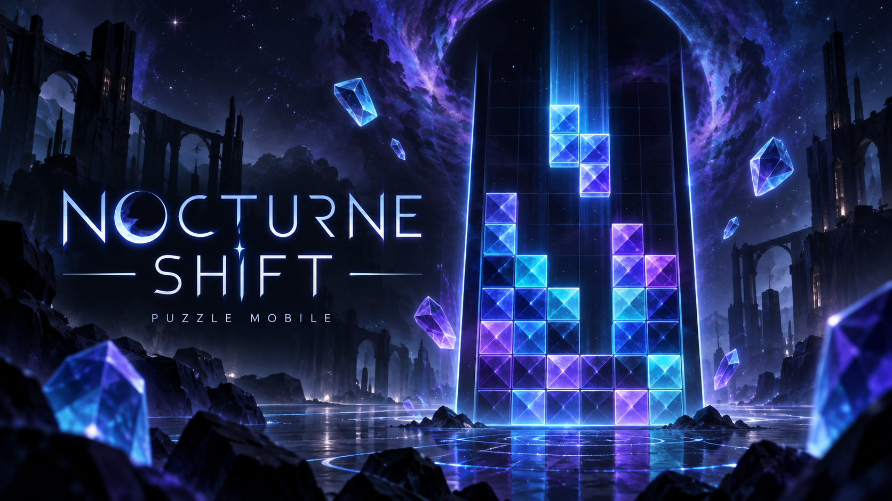
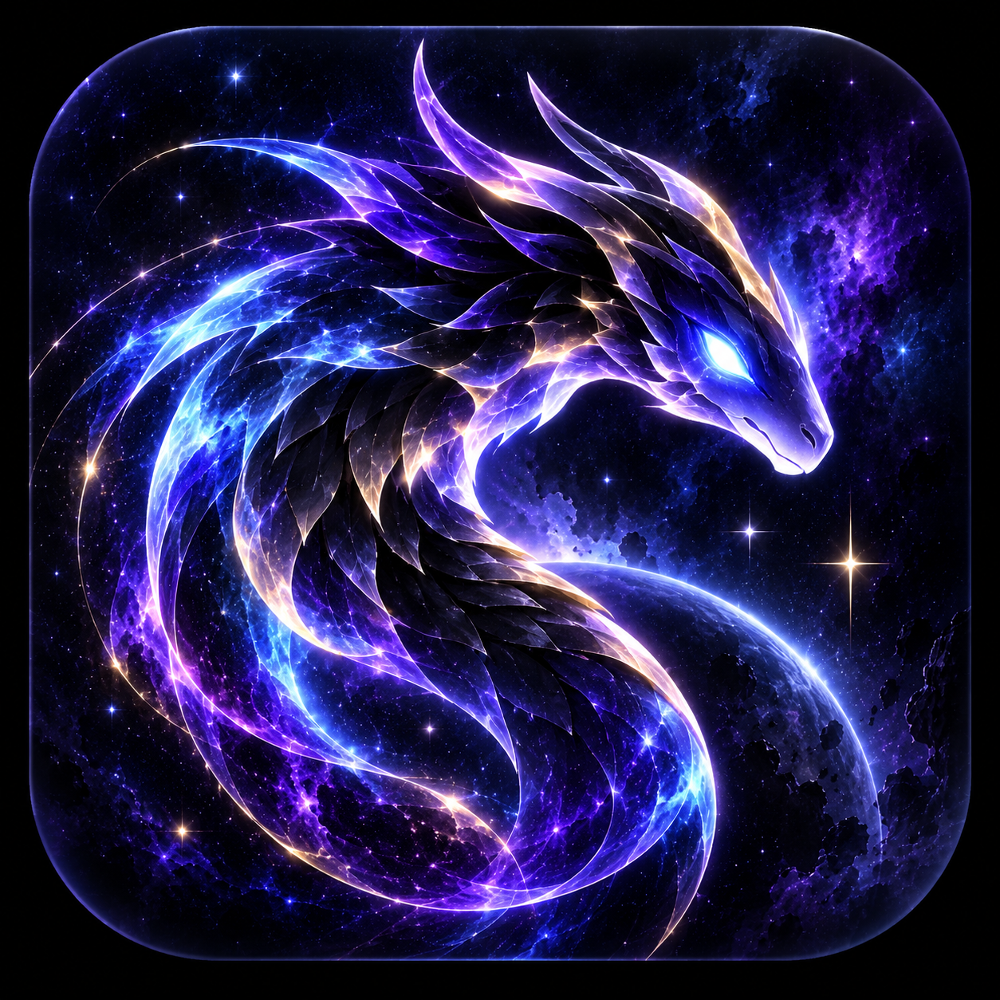

TA CARTE JOUEUR
Profil joueur
Lecture du compte…
—CJ Universels
—Temps de jeu
—Badges
BIENVENUE CHEZ TOI
Retrouve tes jeux et laisse la nuit t’inspirer.
Des jeux pour explorer, ressentir
et recommencer à ton rythme.
TA CARTE JOUEUR
Lecture du compte…
TON ESPACE JOUEUR
Ton identité, tes aventures et les trésors qui t’accompagnent.
CJAJLK GAMES · UNIVERS NOCTURNE
Aucun titre équipé
À TOI DE JOUER
Choisis ton prochain voyage dans l’univers Nocturne.

Attrape. Collectionne. Progresse.
Jouer →
Casse. Maîtrise. Découvre.
Jouer →
Ride. Explore. Conquer.
Ouvrir le jeu · nouvel onglet →
Puzzle mobile nocturne où fragments astraux, combos et Éclipse transforment chaque ligne.
Ouvrir le jeu · nouvel onglet →
Bientôt disponible
PERSONNALISE TON UNIVERS
Des objets à garder, un profil à ton image.
DES FRAGMENTS À COLLECTIONNER
Révèle chaque illustration, morceau après morceau, avec tes CJ Universels gagnés en jouant. À 4/4, elle devient un fond pour ta carte joueur.
Des récompenses visuelles, sans avantage en jeu. Chaque morceau acquis reste à toi.
Retrouver ma bibliothèque à gemmes →CRÉER. JOUER. RÊVER.
Une aventure indépendante pour retrouver le calme à travers le jeu, l’art et la création.
Un espace pour se concentrer et gérer son temps.
Ouvrir dans un nouvel ongletUne pause au rythme des ambiances de la nature.
Ouvrir dans un nouvel ongletPeintures et créations dans un univers sensible et nocturne.
Ouvrir dans un nouvel ongletL’outil d’animation de l’écosystème CJAJLK.